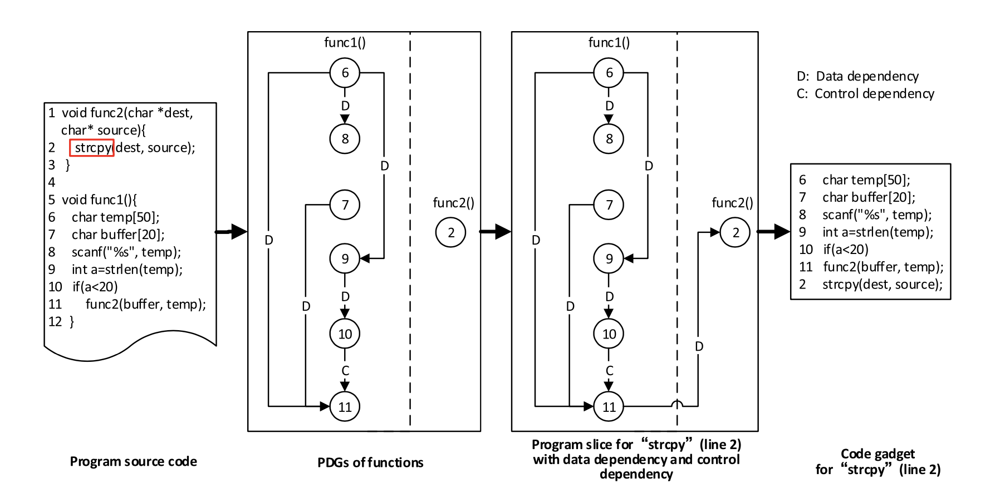
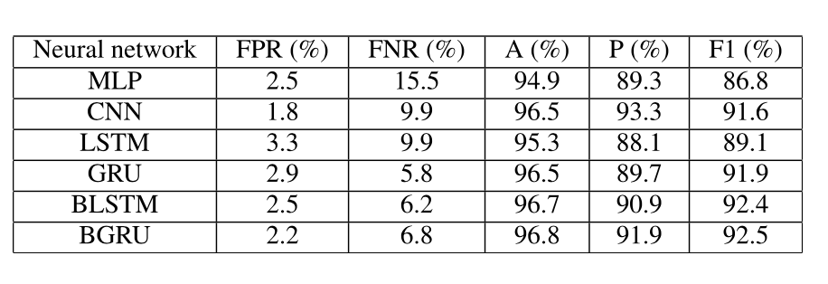
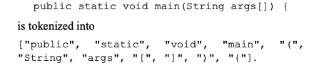
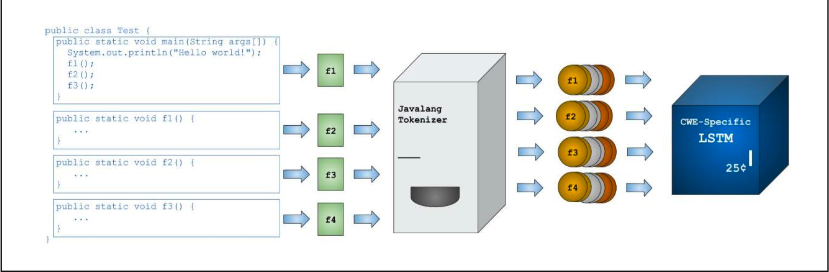
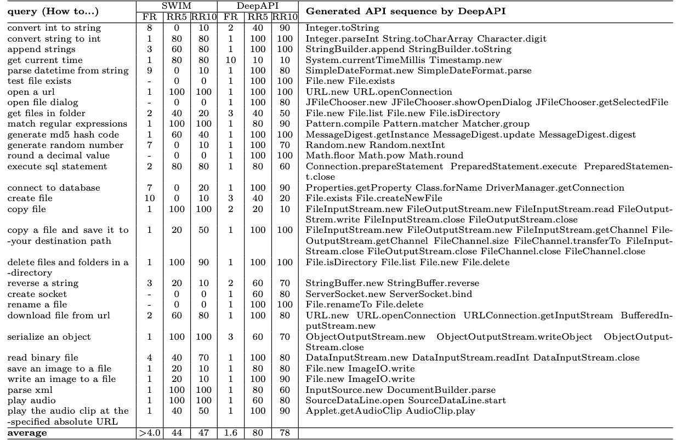
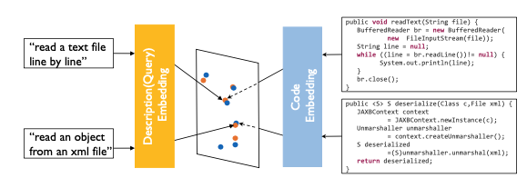

传统的漏洞挖掘主要可以分为静态漏洞挖掘和动态漏洞挖掘；
静态漏洞挖掘是对源代码和二进制层面进行分析；
动态的漏洞挖掘方法主要是模糊测试和符号执行两种方法；
这些方法本身都存在一定自身的缺陷，一般只适用于一种情况，而在其他情况可能会效果比较差。例如符号执行主要存在路径爆炸和约束求解时资源消耗过大的问题，而fuzzing则需要考虑路径覆盖率，以及种子的生成变异算法方面的问题。
另外由于近年来机器学习尤其是深度学习的火热，各种方向都可以与ai结合，或许就能做出效果不错的系统；

基础知识
源代码静态漏洞检测的方式主要有两类，其中基于模式的又可以分为三类：
- Code similarity-based approaches
- Pattern-based approaches
- rule-based
- machine learning-based
- deep learning-based
VulDeePecker
2018 NDSS
贡献
贡献了第一个漏洞检测深度学习数据集；
第一个基于深度学习的细粒度的(slice)源代码漏洞检测系统；
预处理
从程序源码中提取出函数调用和api
api被分成forward和backward两类，forward类的api是需要用到外部输入的函数
backward是不需要用到外部输入的函数
根据函数调用的每一个参数生成一系列program slice
slice也分成两类，forward slice是会受到存在问题函数参数影响的slice
backward slice是可以影响的存在问题代码上下文的slice
将这些参数相关的行生成code gadget
将code gadget转换为vector
这个过程将用户输入的变量，函数名称全部抹去，但是保留危险函数的名称
转换为变量是使用到word2vec
神经网络结构
双向lstm
dense降维
softmax映射到（0，1）区间
A Comparative Study of Deep Learning-Based Vulnerability Detection System
2019 IEEE Access；引用了VulDeePecker；
同一个团队做的内容；
VulDeePecker使用到了BLSTM，这篇文章提出一个疑问就是，为什么使用双向LSTM，其他的神经网络结构是否会效果更好；
贡献
- 收集了两个数据集，包含了126种漏洞；而vuldeepecker中的数据集只包含了2种漏洞；两个数据集一个包含额68353个包含了数据依赖和控制流依赖的code gadget，另一个包含了98262个只包含数据依赖的code gadget；数据集公开在了github
- 评估了数据集中各种不同因素对神经网络效果的影响
- 控制流依赖可以提高哦F1 score
- imbanlanced data对数据集没有明显影响
- BRNN比RNN效果好，这两个都比CNN效果好
- 基于开源工具Joern实现了深度学习的漏洞检测系统，用来与基于商业工具checkmarx做对比；
预处理
主要和之前的vuldeepecker是类似的，有一些差异在于，没有用到之前使用的商业工具checkmarx，而是用到了joern
首先用joern生成了一个Program Dependence Graph；
主要流程就是PDG->Code slice->Code gadget->vector
这个PDG是根据行号生成的，每一行相关的前后行绘制成图

例如图中6->8存在一个关联，看到源代码第6行和第8行的内容;
1 | char temp[50]; |
这两句都是和temp这个变量相关的，因此在PDG中存在一个连线；
这个PDG图中存在两种类型的依赖：
- data dependency
- data dependency and control dependency
第一种是program slice只与前面的数据相关
第二种类型还涉及到backward slice中控制相关的部分代码
神经网络
论文比较了6种神经网络的效果：
- Multi-Layer Perception
- Convolutional Neural Network
- LSTM
- Gated Recurrent Unit
- BLSTM
- BGRU
几种网络比较效果如下

这可以得到的结论是，双向RNN效果比单向好，另外CNN和MLP不适合这种应用场景
Project Achilles
Project Achilles: A Prototype Tool for Static Method-Level Vulnerability Detection of Java Source Code Using a Recurrent Neural Network
2019 ASEW
好水
对JAVA源码进行检测，在44495个测试用例上进行测试，24小时内对29种不同的CWE漏洞进行检测，可以得到90%以上的准确率
背景
这篇文章想解决的是
Can some form of machine learning be used to statically analyze source code to accurately detect security vulnerabilities?
主要原因是一般机器学习的方法会有很高的false postive率，这使得相关的系统在检测出存在漏洞的问题之后，仍然需要花费大量的人力用于漏洞的验证
考虑到神经网络在NLP领域比较成功，自然会想到将其应用到漏洞检测中，将源码用NLP的方法进行处理
但是NLP处理语言时，语言每一个单词都是有特定含义的，并且也存在前后的一套规则语法；但是这在处理源代码时是未必能行得通的，程序猿给变量命名可未必会遵循什么语法；
因此能够继承逻辑，表现程序内在的联系是一个比较重要的问题
贡献
- 设计实现了一款开源的原型工具用于检测java源代码的安全漏洞
- 使用LSTM分类漏洞类型
- 初步验证了LSTM准确验证、报告JAVA源码安全风险的能力
预处理
将源码tokenized into列表

整体系统的结构

有一点不同的是他们训练的LSTM神经单元是按照漏洞的类型训练的，不同类型的漏洞分别训练了一个LSTM网络
Recognizing Functions in Binaries with Neural Networks
UCB，2015年USENIX
这时候机器学习正经历文艺复兴，作者团队提出了将深度学习用在Binary analysis中，比原本的state-of-the-art machine-learning-based model效果要好；
并且相比原先的机器学习的模型，训练速度、检测速度都增长很多
机器学习的好处
- 可以直接从原始数据中学习，不需要经过太多的处理
- 神经网络是end-to-end的
解决方案：
- 训练了一个RNN，接受几个字节的二进制作为输入，对函数边界进行预测
- 不需要进行任何预处理，例如反汇编、归一化等等
- 使用ByteWeight中给出的数据集进行验证，比他们学的更快80hours：587hours；验证更快43mins：2weeks

这篇文章的神经网络是BRNN，可能这时候还没有BLSTM或者BGRU
他们给出了几种神经网络的比较，说
LSTM、GRU比RNN强，但是还是没有BRNN效果好
The Coming Era of AlphaHacking？
The Coming Era of AlphaHacking?
A Survey of Automatic Software Vulnerability Detection, Exploitation and Patching Techniques
2018 IEEE DSC
中科院计算所和北大的论文；
这篇文章是一篇综述，我们主要关注还是Machine Learning相关的部分；
主要内容
漏洞挖掘被分成了三种类型；
- static
- graph-based（CFG、DFG、PDG）
- static analysis with data modeling
- dynamic
- fuzzing
- dynamic taint analysis
- mixed
自动化漏洞挖掘：
- patche-based exploits generation
- Control flow hijacking exploit generation
- Data-oriented exploits generation
自动化补丁：
- The Automatic Patching Process
- Fault-locating
- Patch-generating
- Function-verifing
- Runtime state-based repair
- monitor
- rollback
- Detect-based Repair
- Input Filter
- Search-based Repair
- Statistical Debugging Metrics
- Standard Semantic
机器学习相关：
- Vulnerability Detection and Exploitation
- Vulnerability Patching
- Open Challenges
重点还是看机器学习相关的
漏洞检测利用
Vccfinder，这篇文章提出利用含有meta-data和code metrics的repository来识别潜在的漏洞；他们从66个C/C++ github项目中提取了170860次commit，并将其中存在漏洞的commit和CVE ID进行了一个映射；之后利用SVM从这些数据中训练了一些特征用来检测漏洞。
对vulnerability exploitation来说，语义信息是很关键的，SemFuzz通过收集CVE公布的漏洞相关信息和Linux的git log自动化生成POC，这其中CVE可以提供版本信息、漏洞类型、漏洞函数；Linux 的 git log可以提供patch的信息。SemFUzz可以说是基于语义的fuzz技术，用NLP来提取分析漏洞相关文本的语义信息，而不是直接从代码中来提取信息。通过这种方式，生成了一个触发vulnerable functions的call sequence，之后用seed mutation作为fuzzing的输入知道漏洞被触发；这篇文章的作者收集了过去5年112个CVE曝光的Linux Kernel的漏洞，最终检测出了16%，甚至还有之前没有曝光的0day
漏洞补丁相关
这方面主要有两种策略：
- generate-and-validate
- semantic-driven
ELIXIR也很奇怪，描述的没太看明白和ML有啥关系
【？描述很奇怪】Deepfix是一个基于语义和深度学习的程序补丁系统，它通过不停的调用训练神经网络修补漏洞；作者建立了两类数据集，包括正确的和错误的程序，之后使用GRU来检测6971个错误的程序来验证方法的有效性。
ML存在的问题
- 深层语义的理解；深层的语义信息对软件安全是很重要的内容，AI对这些理解的越多，效果就会越好
- 基于二进制的机器学习；现有的一些机器学习在安全中的应用大多数拥有源代码，面向二进制的虽然有，但是一般很少是直接用作Exploitation的，还需要更多的探索；
- 开源数据集；缺少像ImageNet这样在CV领域十分广泛、数据量大的数据集，另外这方面的工作也确实工作量很大。
从自动化到智能化：软件漏洞挖掘技术进展
清华大学学报上的文章，把整个软件漏洞挖掘相关的内容都讲了不少；
这里还是着重看其中机器学习相关的内容
二进制函数识别
函数识别是二进制分析的基础，ByteWeight使用加权前缀树学习函数的签名，并通过签名匹配二进制片段的方式识别函数；树的每一个节点与二进制的字节或指令相对应，从根节点到某个既定节点的路径代表了可能的字节序或指令序列。值集分析和增量控制流恢复算法实现对函数边界的识别，最终效果比IDA、BAP等工具准确率高很多。
函数相似性检测
Gemini把函数控制流图CFG扩展为ACFG，之后用struct2vec转换为向量，之后用Siamese网络训练，实现相似函数距离近的效果，最终通过计算向量间的距离判断函数的相似性；
测试输入生成
Learn&fuzz将fuzz中高结构化样本生成问题转换为NLP文本生成问题，使用Char-RN实现了对PDF中obj语法的学习
Neufuzz使用CNN学习连续可微的neural program，用来近似模拟程序中的实际逻辑，之后通过对学习好的neural program求梯度指导测试输入生成
Deep reinforcement fuzzing，利用马尔可夫模型把fuzzing转换成了强化学习的模型，利用Q-Learning算法优化了奖励函数
Faster fuzzing利用GAN增强模糊测试技术，能够不依赖大量的数据样本进行测试；
Deep API Learning
2016 ACM SIGSOFT
emmm,这篇文章和安全没啥关系，讲的内容是利用NLP的方法从很多代码中学习，自动生成API用法的示例；
实现的效果是输入一个想要效果的描述，会对应出相关的API接口

大概就是这样的效果
这可以说明NLP的方法是可以从源代码学到类似语义这样的内容的；
就给后面安全相关的源代码层面的工作提供了一些启发。
Deep Code Search
这个也和上面Deep API Learning类似，并不是出于安全目的提出的，这个的目的是制作一种code snippets搜索的工具，输入代码的语义含义，自动返回一段表示这种特定含义的代码；

Towards a Software Vulnerability Prediction Model using Traceable Code Patterns and Software Metrics
这篇文章的目的是利用traceable pattern降低vulnerability prediction framework中的false negative率；和软件工程相关性比较高，没有仔细看；
Automated software vulnerability detection with machine learning
arXiv的一个预印本，质量感觉比较一般；
对C、C++程序使用deep neural network进行检测，文中使用了两种方式进行对比，一种直接使用源代码，另一种则使用程序在编译时的中间表示IR作为输入；两者比较后结论是使用源代码的效果好（怀疑这里是因为他们使用中间表达处理的方式不好）
另外在后面进一步做预处理的时候这篇论文也是直接粗暴的使用word2vec进行处理的，最后还用了CNN，很奇怪；
感觉水平一般，效果不好也是预料之中
DeepFix
DeepFix: Fixing Common C Language Errors by Deep Learning
2017年发在AAAI上
文章作出的系统是用于修复程序的常见编程错误；起的作用类似于编译器在编译时进行语法检查这样的作用，但是可以直接进行补丁；
最终测试的效果是在学生为93个系统编程的6971个错误中，完整修补了27%的漏洞，部分修复了19%的漏洞；
细节
这个系统的核心是一个多层的序列->序列的神经网络，并且带有attention机制